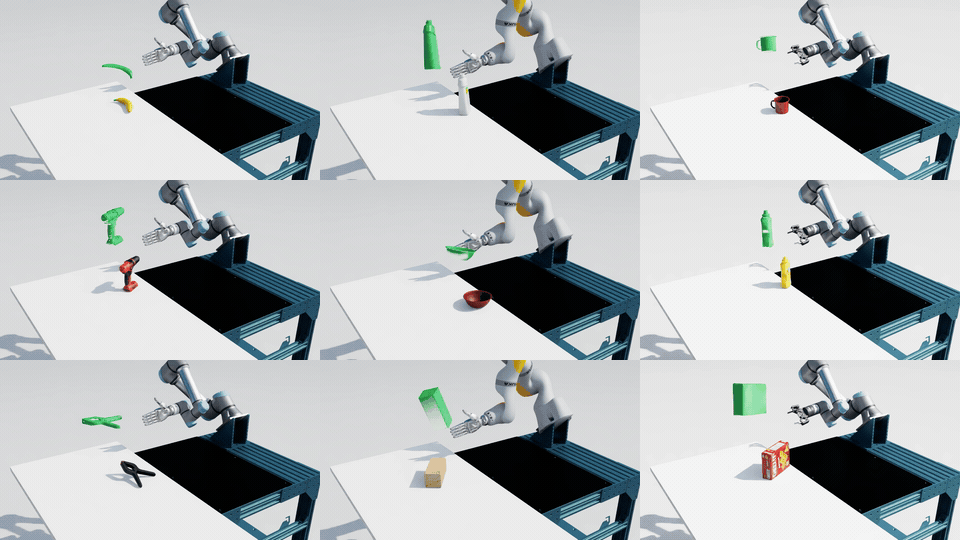
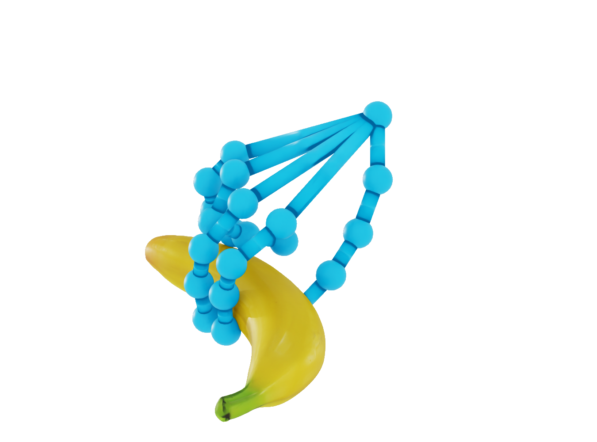
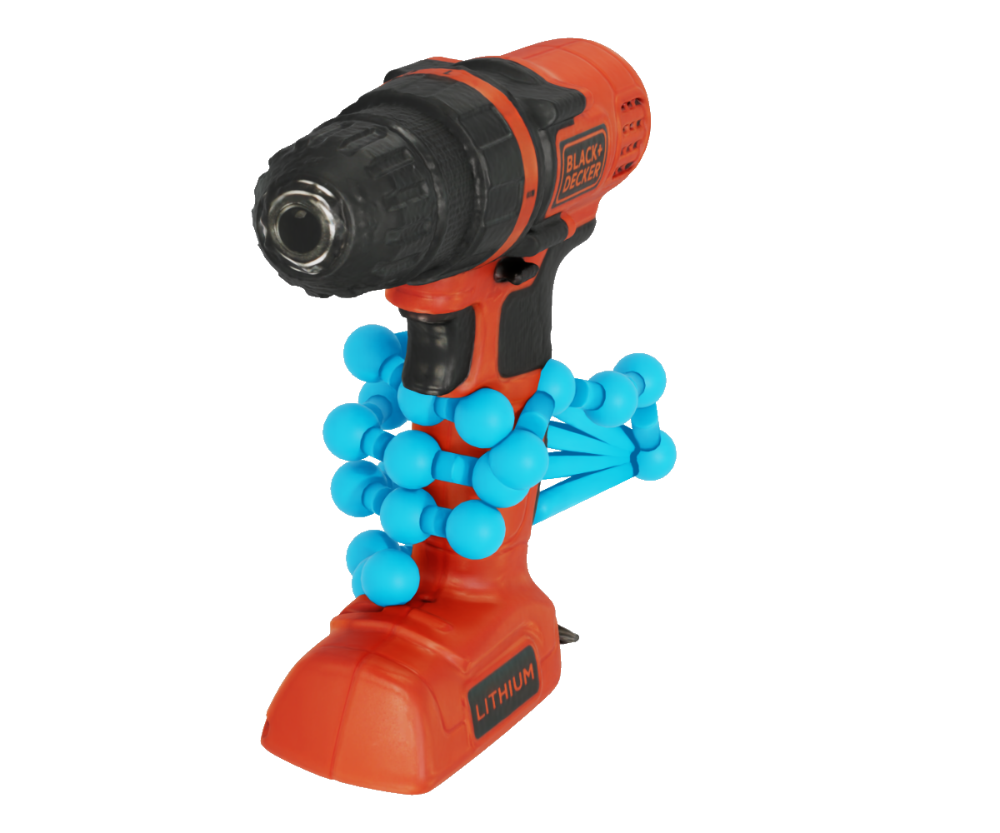
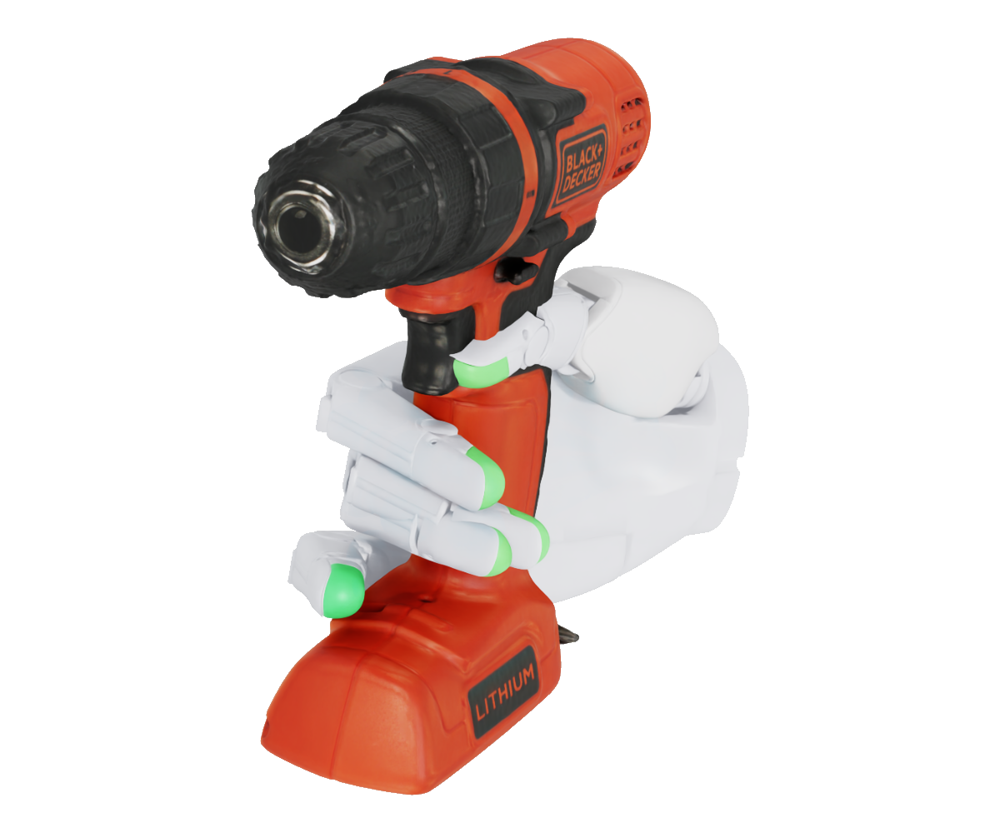
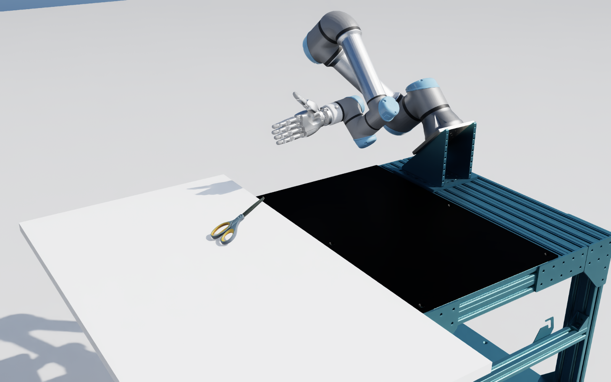
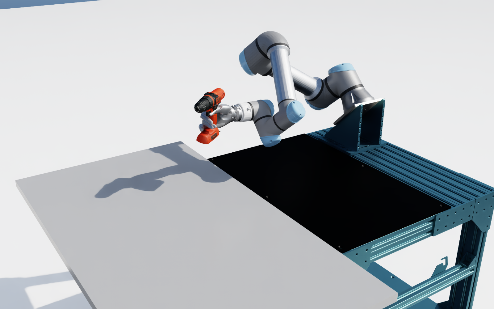
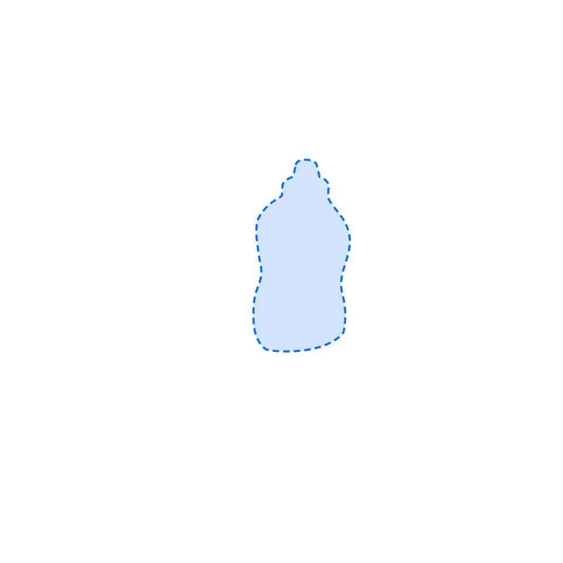
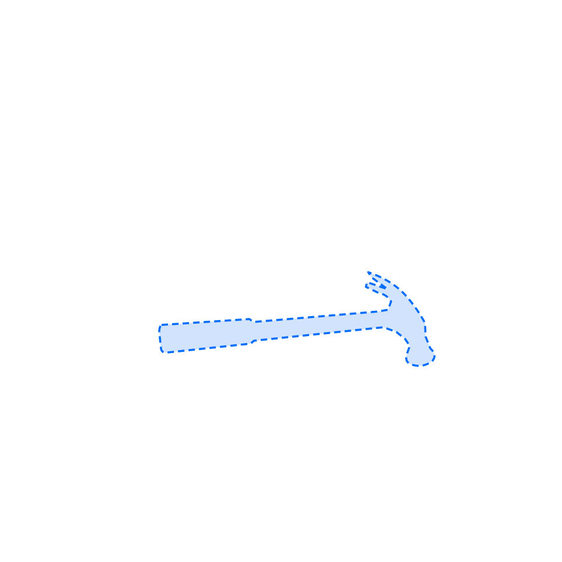

Applied Intuition · Research
X-Reset: Scaling Object-Centric Reinforcement Learning via Cross-Embodiment Resets
Abstract
Reinforcement learning (RL) in simulation can train dexterous manipulation policies without robot demonstrations, but training a single generalist policy with task-agnostic rewards faces a severe exploration problem: approaching, grasping, and reorienting diverse objects with many degrees of freedom is difficult to discover from scratch. Prior works make exploration tractable with high-quality robot demonstrations, per-task reward shaping, or by restricting policies to narrow modes of behavior. We propose X-Reset, a framework that instead resolves exploration with human hand-object demonstrations. Rather than imitating or tracking retargeted human motion, X-Reset kinematically retargets hand-object states to noisy robot states, filters out states that are unstable in simulation, and samples the remainder as resets during RL training with general-purpose object-centric rewards. The resulting policy depends only on object state and goal, with demonstrations entering training through the reset distribution. We show that X-Reset trains generalist policies on 20 objects across three embodiments—a 22-DoF hand on two different arms and a parallel-jaw gripper—and resolves the exploration challenges of RL from scratch. X-Reset scales with the number of training objects, generalizes to unseen objects, can learn from imperfect hand-pose estimates, and transfers behaviors zero-shot from sim-to-real.
How do we make generalist RL training feasible?

Bring the object to its goal pose.
A robot must approach, grasp, and reorient the object. A generalist policy does this across different objects; each robot embodiment has its own policy.
The reward measures progress toward the object’s position and orientation, rather than asking the robot to copy a human motion.
- Approach
- Grasp
- Reorient
Current pose
Goal pose
The reward is simple. Discovering it is not.
From an ordinary start, the policy must discover a useful grasp before it can learn to reorient. Occasionally starting from a retargeted hand–object state exposes later stages of manipulation during training.
Exploration from scratch
Retargeted hand–object reset

Demonstrations change where learning starts, not what motion the robot must imitate. Training still includes ordinary resets, so the policy must also learn to approach and grasp.
The method
Generate resets. Then learn with them.
Human hand–object poses propose starting states. Physical filtering keeps usable ones. Reinforcement learning discovers the behavior.
01 / Retarget
Transfer a state, not a motion to imitate.
Map human fingertip and wrist targets onto the robot hand, then solve collision-aware inverse kinematics for the arm.
Each candidate pairs a robot joint configuration with the object’s pose and goal. A plausible kinematic match is only a proposal: it may still be unstable in simulation.
Human data supplies reset states. Policy training uses no imitation or time-indexed tracking loss.

Human hand + object

Robot hand + object
02 / Filter
Reject states that fail the physical check.
Hold the candidate joint targets in simulation with gravity disabled. Discard invalid configurations and states that terminate, yield non-finite measurements, or exceed the filter’s velocity thresholds.
Retain 0.25× speed
Discard 0.25× speed
03 / Reset bank
Keep ordinary starts in the training mixture.
Each training environment has an assigned object and demonstration. At reset, choose either an ordinary start or a uniformly sampled retained frame from that demonstration, paired with its terminal object goal.
Ordinary reset
Probability 1 − p
Hand–object reset
Probability p
One reset distribution for RL training
(1 − p) ρordinary + p ρhand–object
04 / Object-centric learning
Observe the object. Learn how to move it.
PPO trains an LSTM policy from interaction. The actor receives current and goal object keypoints plus robot proprioception; its recurrent state carries interaction history.
Policy observations
- Current object keypoints
- Goal object keypoints
- Robot proprioception
LSTM policyTrained with PPO
Actions → simulation
New observations return to the policy.
Reward the task, not imitation. Encourage proximity and progress toward the object’s goal pose, with a success bonus, action smoothness, and safety penalties. No imitation or tracking loss is needed.
The critic also receives privileged training information. Policies are trained separately per embodiment, with domain randomization and object/robot perturbations.
Rollouts
Across robots, objects, and settings.
Explore the recorded policies in simulation and on the real robot. Choose an object to see its available training conditions, or browse all objects together.
Recorded rollouts
Native-speed playback · Selected qualitative examples
Original paper results


Perturbation recovery
When the object is disturbed.
The real robot responds to external perturbations.

